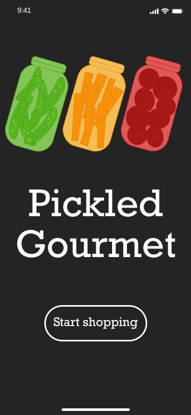
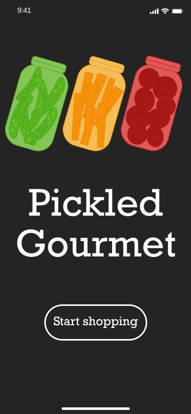

Hello! I'm Katherine.
Interface Design

UI kit for website created on Adobe Illustrator.


Game interface for iPhone X created on Adobe XD. Click for prototype.
 


Food application interface for iPhone X created on Adobe XD. Click for prototype.
Logo Design

Wordmark logo design created on Adobe Illustrator.

Wordmark logo design created on Adobe Illustrator.
Digital Illustrations

Web Banner for Adobe Illustrator.
Moodboard Design

Space themed moodboard utilizing grid in Adobe XD (1000 x 1000).

Moodboard for baby heart beat monitor created on Adobe Illustrator.